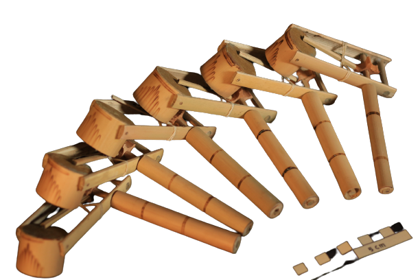
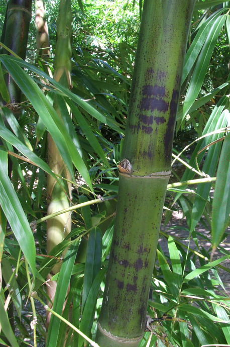
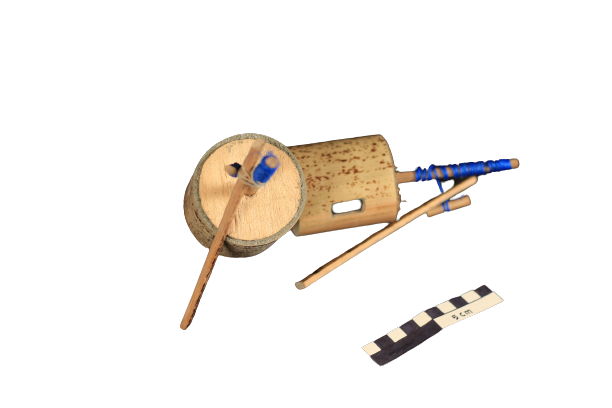

Sejarah Desa
Menurut catatan sejarah desa yang dikutip oleh tokoh masyarakat setempat, yaitu Mbah Sastro dari Dusun Gunung Mijil, dapat dijelaskan bahwa nama Desa Kebonsari terdiri dari dua kata, yaitu "kebon" dan "sari". Dalam bahasa Jawa, "kebon" berarti kebun, sementara "sari" berarti inti atau pokok. Oleh karena itu, secara harfiah, Desa Kebonsari dapat diartikan sebagai desa yang didominasi oleh kebun. Menurut penuturan Mbah Sastro, awalnya Desa Kebonsari hanya terdiri dari dua Dusun, yaitu Dusun Ngrucilan dan Dusun Duren. Namun, seiring berjalannya waktu dan perkembangan sejarah daerah, muncul beberapa dusun lainnya, seperti Dusun Gunung Mijil, Kebonwage, Pule, Gupit, Cakran, dan Dalangan. Awal mula nama Desa Kebonsari berasal dari nama Dusun Kebonwage, yang sekarang telah menjadi salah satu dusun di Desa Kebonsari. Nama Kebonwage kemudian berkembang hingga akhirnya menjadi nama yang lebih dikenal saat ini, yaitu Desa Kebonsari. Pada masa pemerintahan Raja Helminah, Desa Kebonsari bergabung dengan Desa Tegalarum, dan kepala desa atau yang biasa disebut Lurah memimpin kedua daerah tersebut. Namun, setelah kemerdekaan, sekitar tahun 1945-1950, Desa Kebonsari dan Desa Tegalarum dipisah menjadi dua desa terpisah meskipun berdekatan. Seperti disebutkan sebelumnya, keenam dusun yang ada di Desa Kebonsari masing-masing memiliki sejarahnya sendiri, termasuk penamaan dusun tersebut yang berasal dari sesepuh dusun tersebut. Sesepuh Gunung Mijil, misalnya, melestarikan nama Gunung Mijil yang diambil dari nama Mbah Kyai Mijil. Demikian juga dengan asal nama dusun-dusun lainnya, seperti Dalangan yang berasal dari Mbah Kyai Dalang, Dusun Cakran dari Mbah Kyai Cakra, Dusun Gupit dari Mbah Kyai Gupito, Dusun Kebonwage dari Mbah Kyai Wage, dan Dusun Pule dari Mbah Ahmad Sari.
Potensi Desa

Desa Kebonsari adalah desa yang berlokasi di kecamatan Borobudur, Kabupaten Magelang, Provinsi Jawa Tengah. Desa Kebonsari merupakan desa dengan potensi wisata kerajinan yang sangat bermacam-macam selain potensi kerajinan yang besar desa ini dapat juga disebut desa budaya karena memang budaya yang masih sangat kental. Di desa ini banyak orang dengan mata pencaharian sebagai pengrajin bambu karena memang potensi bambu disini sangat besar, hampir semua jenis bambu ada disini berikut merupakan jenis bambu yang ada didesa Kebonsari.
Jenis Bambu
-
Bambu Apus
Ciri-ciri: Tekstur ulet, kuat, seratnya padat, sehingga bambu paling serbaguna Kegunaan: Eblek, besek, amben, kandang ternak, andha, keranjang, kepis, usuk, reng, pagar, ketepe, kepang, anyaman, furniture (meja kursi), permainan, trisik.
-
Bambu Petung
Ciri-ciri: Ukuran relatif besar dan kuat Kegunaan: Usuk, reng, ongkek, andha, blandari, saka / tiang, gepyokan, trisik, dandang aring.
 -
Bambu Gombong
Ciri-ciri: Kuat, mirip seperti petung tapi ukurannya lebih kecil Kegunaan: Usuk, seng, ongkek, blandar, saka / tiang, gepyokan, trisik, dandang aring.
-
Bambu Ori
Ciri-ciri: Pada carangnya terdapat duri Kegunaan: Kerajinan, kursi, pagar.
-
Bambu Legi
Ciri-ciri: Tekstur keras, ukuran sedang Kegunaan: Reng, usuk.
-
Bambu Kuning
Ciri-ciri: Ukuran kecil, kulit berwarna Kegunaan: Bambu runcing, tanaman hias.
-

Bambu Tutul
Ciri-ciri: Warna kulit kuning ketika sudah kering dan ada bintik-bintik coklat Kegunaan: Kerajinan, furniture (meja kursi), pagar, permainan gangsingan
-
Bambu Wulung
Ciri-ciri: Kulit berwarna hitam Babar atau jika di-irat menghasilkan banyak iratan Kegunaan: Usuk, reng, pagar bambu/trisik, saka/tiang, lampu meja, gelas, teko, amben, anyaman dinding, welad
-

Bambu Ampel
Ciri-ciri: Ukurannya besar tapi beruas pendek Ketika kering kulit berwarna putih kekuningan Paling mudah kena hama bubuk Kegunaan: Kerajinan tangan (ganci, pulpen, tirai, sumpit, tas, dll), alat pertanian, lanjaran, padasan, talang air
 -
Bambu Gendani
Karakteristik : Diameter kecil, kulit tipis, pohon tidak tinggi seperti bambu pada umumnya
Kegunaan : Tanaman hias, kerajinan berupa souvenir -

Bambu Wuluh
Karakteristik : Kulit tipis, diameter kecil, ruasnya panjang hingga 1 meter
Kegunaan : Permainan tulip, sempritan, seruling, sedotan
Komoditas Dusun
Berikut merupakan komoditas ditiap dusun
Produk
Beberapa produk di Desa Kebonsari


Botol
Cangkir
Caping

Celengan
Ceting
Gedek
Gelas Bambu

Icir

Ikrak

Irus

Jam Dinding Coiling
Kalung Bambu

Kap Lampu Coiling

Kukusan
Lampu Meja
Teko

Tenggok
Tompo
Kebudayaan
Macam - Macam Kesenian yang ada di desa Kebonsari

Peninggalan dan Tradisi
Macam - Macam Peninggalan dan Tradisi yang ada di desa Kebonsari


 (1).jpg)


.jpg)